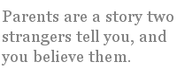

Jee Leong Koh
The Far Ships
for Keith Wiltshire, my teacher
Your yearly letters make me smile.
Hammered on an old processor,
they slash with slanted lines of bile
the madness of all car-owners,
the British stock of nuclear shells,
how Singapore Immigration stopped
you at the airport, bade farewell
to future visits, and then dropped
you on the next flight home, without
giving a reason. Youth protection?
Your letters sound so free of doubts,
the years a seamless flight connection.
You are as constant as your letters.
With equal passion, you taught us boys
Shakespeare: how not to heed our betters
as Hamlet heeds the ghostly voice,
and why, in Pride and Prejudice,
prejudice is the mate of pride.
You read us Larkin’s poem “Next Please”
and the far ships came alongside
and then sailed on, leaving no goods,
giving no reason. Wide awake,
we saw from where we sat or stood
waters that neither breed nor break.
Do you remember those good years
as good? I do, with thankfulness,
for though your letters do not bear
good news of the wide world, they bless.
From Talk About New York
2. Visual Sense
…the leisurely sightseeing, the photos that you so gamely took so that I won’t look like an ant.
You know how helpless a photographer I am.
With no manual knack, I own no visual sense,
not enough anyway to frame beautiful scenes
into souvenirs. Thank goodness for the Digicam!
Freed to retake my mistakes in memory sticks,
I reached for Liberty’s diadem-spears and torch.
You, my dear R., appeared the size of a cockroach,
a poor picture among the improvised picnics.
Focused on you, your pixie, but not pixeled, face,
another photo showed your Mona Lisa smile,
but Liberty became the grayish granite wall
guarding the entrance into the American base.
Lying down to shoot upwards, as in my bed,
I saw you stand shoulder to shoulder with Liberty.
From that temporary place, I also captured me
and, looming over me, Liberty’s handsome head.
6. Natural History
I’ve come to change my mind about Americans. Am sitting in the American wing at the museum, so forgive me if the card is disjointed.
This is the dinosaur mummy, fossilized thing
of Mesozoic flesh, tendons, and tubercles
bumpy as birds’ feet. The cladogram labels
the features of Charles Sternberg’s find in Wyoming.
This diorama of the black mountain gorilla,
conceived by Carl Akeley who loved Mount Mikeno
and buried himself there, is backed by that volcano.
The tutsan tree, the pendant bedstraw, so real! Ah,
the Yakut Shaman! Slipping into a deep trance
to free this sleeping woman captured by demons.
A faithful record based on Waldemar Jochelson’s
description of a true tobacco influenced dance.
Here’s the American wearing his bible belt
below protuberant waist, his nonflammable flag
flying above him. The precision of that price tag!
And see, this lifesized cast, his godhead, Roosevelt.
Exile Is Our Condition
I’m flying back to Singapore for a two-week visit. I don’t know when Singapore stopped feeling like home to me. It happened earlier than my flight to New York to write poetry and come out as gay. Earlier than my undergraduate years at Oxford when the Anglican Church appeared a more favorable spiritual home. National service, with its regimentation, terror and unreason, only confirmed, but did not initiate, my feeling of alienation.
The loss of home is not the same as leaving home. Leaving involves personal choice. In Singapore, you decide to get married, and you leave home to set up a home of your own. In Britain or the States, you leave home to set off on the adventure of college, expecting to make your own way after that decisive break. My American friends who returned from college to live with their parents always speak of that homecoming with a rueful sheepishness. You don’t have a choice, however, in losing a home. The loss comes to you, whether in the form of an eviction notice or a spiritual conviction, with the force of a tsunami or a sigh, and you are forced out of the house, even if physically you remain in it. It is exile.
There are two ways of responding to exile. One may strive to return home. If that proves impossible, as it is for Tiananmen dissidents or for Native Americans who don’t have the American wilderness to return to, one re-creates the new world in the image of the old. So, Chinatowns take the place of China. One danger of that first kind of response is fossilization; the home changes, as it must, but the homestead is a mere skeletal record, and skeletons, devoid of flesh and blood, do not grow.
The second response is to accept one’s exile as permanent. Not just permanent but the true state of things for oneself, and others. The idea of home then is revealed to be an illusion. Origin is a dream. Parents are a story two strangers tell you, and you believe them. The story may even include the realist convention, also called “fact,” of similar DNA. No mother, no father — or what amounts to the same: many mothers and fathers — one wanders wide-awake from room to rented room.
I am persuaded this is the true state of things because of our experience of time. We are exiled from one moment to the next because we don’t have a choice whether we wish to leave that first moment. Time does not ask for our permission; it boots us out. We are always alienated from our past, from the minute, the second, that just went by. To dream of returning to that minute, that second, is the work of memory. Against Eliot, Time Past is not Time Present. Time Past is Time Past, and memory is that pathetic effort to delude ourselves about the presentness of the past. There is only the exilic present. IS is an exile, an expatriate or a refugee, I AM already banished from Paradise.
A poetry of place is necessarily nostalgic: New England, old England, India, the Indies, Gold Coast, Ivory Coast are switcheroo versions of Eden. A poetry of time, however, is defiantly truthful about our outcast condition. Shakespeare is a poet of time, not of place. He does not have much to say about place, whether it is pre-Christian Britain, rotten Denmark or Republican Rome; his most evocative descriptions of place are of symbolic spaces: the woods, the island, the heath. The underlying belief is that “all the world’s a stage.” The details of place are so much stage scenery, interchangeable and removable.
But Shakespeare, the poet-dramatist, has innumerable memorable things to say about time. To be or not to be, that is the question. Now is the winter of our discontent. That time of year thou mayst in me behold. Poetry, written and read in time, confesses the deepest truth of our metaphysical condition: “Tomorrow and tomorrow and tomorrow/ Creeps in this petty pace from day to day/ To the last syllable of recorded time.”
What are then our loyalties, as exiles, to the past? What does the past deserve of us when it is responsible for turning us out in the first place? Commemoration, intones the historian. Celebration, exults the chauvinist. I say the past deserves nothing of us. Let the dead bury the dead. My loyalties are to the living. Those living in the presence of pain, those in the presence of joy.
Visiting Singapore next week, I will be there for the living. Let me attend to them.
Born in Singapore, Jee Leong Koh read English at Oxford University and completed his Creative Writing MFA at Sarah Lawrence College. His poems have appeared in Singaporean anthologies, and American and British journals such as Crab Orchard Review, Gay & Lesbian Review Worldwide, Shit Creek Review, The Ledge, and Mimesis. His chapbook, Payday Loans, has just been published in April this year. It is available on his blog at http://jeeleong.blogspot.com. His poem “Brother” has been selected by Natasha Trethewey for the Best New Poets 2007 anthology, to be published by the University of Virginia.
|